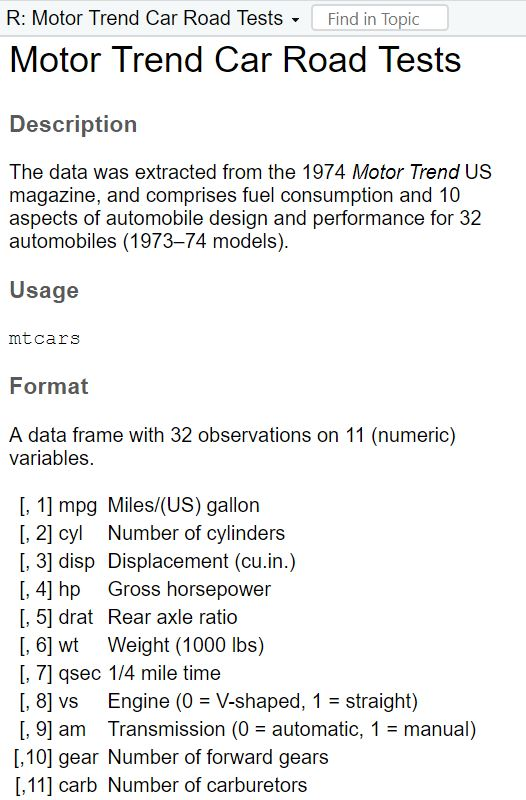

Exercise 5: Test your knowledge
After working through Exercise 5, you’ll…
- have repeated the most important functions of
dplyrandggplot2
In this exercise, we will work with the mtcars data that comes pre-installed with dplyr.
library(tidyverse)
data <- mtcars
# To make the data somewhat more interesting, let's set a few values to missing values (you don't need to know this code):
data$wt <- na_if(data$wt, 4.070)
data$mpg <- na_if(data$mpg, 22.8)Let’s first get to know this data. We can get some information about the
variables that are included in the dataset by using Rs help()
function:
| Image: Output of the help(mtcars) function: |
|  |
We get to know that this is a data set was created from the 1974 Motor Trend US magazine, and that it comprises fuel consumption (mpg) and 10 other aspects (cyl, wt) of automobile design and performance for 32 different cars.
Task 1
Check the data set for missing values (NAs) and delete all observations that have missing values.
Task 2
Let’s transform the weight wt of the cars. Currently, it’s given as Weight in 1000 lbs. I guess you are not used to lbs, so try to mutate wt to represent Weight in 1000 kg. 1000 lbs = 453.59 kg, so we will need to divide by 2.20.
Similarly, I think that you are not very familiar with the unit Miles per gallon of the mpg variable. Let’s transform it into Kilometer per liter. 1 m/g = 0.425144 km/l, so again divide by 2.20.
Task 3
Now we want to group the weight of the cars in three categories: light, medium, heavy. But how to define light, medium, and heavy cars, i.e., at what kg should you put the threshold? A reasonable approach is to use quantiles (see Tutorial: summarize() [+ group_by()]). Quantiles divide data. For example, the 75% quantile states that exactly 75% of the data values are equal or below the quantile value. The rest of the values are equal or above it.
Use the lower quantile (0.25) and the upper quantile (0.75) to estimate two values that divide the weight of the cars in three groups. What are these values?
Task 4
Use the values from Task 3 to create a new variable wt_cat that divides the cars in three groups: light, medium, and heavy cars.
Task 7
Make a scatter plot to indicate how many km per liter (mpg) a car can drive depending on its weight (wt). Facet the plot by weight class (wt_cat). Try to hide the plot legend (you have learned that in Exercise 3, Task 1).
Task 8
Recreate the diagram from Task 7, but exclude all cars that weigh between 1.4613636 and 1.5636364 *1000kg from it.
When you’re ready to look at the solutions, you can find them here: Solutions for Exercise 5.
We have officially finished our chapters on data management and visualization!